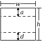

2.1 Pict Datatype
A pict is a pict structure representing an image. Some functions, such as hline, create new simple picts. Other functions, such as ht-append, build new picts out of existing picts. In the latter case, the embedded picts retain their identity, so that offset-finding functions, such as lt-find, can find the offset of an embedded pict in a larger pict.
In addition to its drawing part, a pict has the following bounding box structure:

That is, the bounding box has a width w and a height h. For a single text line, d is descent below the baseline, and a+d=h. For multiple text lines (often created with a function like vc-append), a is the ascent of the top line, and d is the descent of the bottom line, so a+d<h. Many picts have d=0 and a=h.
In addition, a pict can have a last sub-pict that corresponds to the last item on the last line of text, so that extra lines can be added to the last line. In particular, the last element is useful for adding closing parentheses to a block of Racket code, where the last line of code not the longest line in the block.
The size information for a pict is computed when the pict is created. This strategy supports programs that create new picts though arbitrarily complex computations on the size and shape of existing picts. The functions pict-width, pict-height, pict-descent, and pict-ascent extract bounding box information from a pict.
A pict is a convertible datatype through the file/convertible protocol. Supported conversions include 'png-bytes, 'eps-bytes, and 'pdf-bytes.
struct
(struct pict ( draw width height ascent descent children panbox last) #:extra-constructor-name make-pict) draw : any/c width : real? height : real? ascent : real? descent : real? children : (listof child?) panbox : (or/c #f any/c) last : (or/c #f pict-path?)
The draw field contains the pict’s drawing information in an internal format. Roughly, the drawing information is a procedure that takes a dc<%> drawing context and an offset for the pict’s top-left corner (i.e., it’s bounding box’s top left corner relative to the dc<%> origin). The state of the dc<%> is intended to affect the pict’s drawing; for example, the pen and brush will be set for a suitable default drawing mode, and the dc<%> scale will be set to scale the resulting image. Use draw-pict (as opposed to pict-draw) to draw the picture.
The panbox field is internal and initialized to #f.
The last field indicates a pict within the children list (transitively) that can be treated as the last element of the last line in the pict. A #f value means that the pict is its own last sub-pict.
struct
(struct child (pict dx dy sx sy sxy syx) #:extra-constructor-name make-child) pict : pict? dx : real? dy : real? sx : real? sy : real? sxy : real? syx : real?
A child structure is normally not created directly with make-child. Instead, functions like hc-append create child structures when combining picts to create a new one.